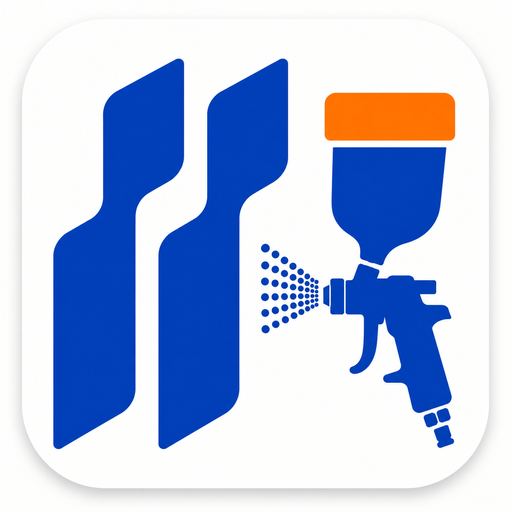

도장 현장작업
도장 현장작업 체크시트 모바일 화면을 실행합니다.
작업 화면 열기
설치 방법
이 GitHub 화면에서 크롬 메뉴를 열고 홈 화면에 추가를 누르세요.
주소창이 khc7757-sys.github.io일 때 추가해야 전용 아이콘이 적용됩니다.
주소창이 khc7757-sys.github.io일 때 추가해야 전용 아이콘이 적용됩니다.
홈 화면 아이콘으로 실행하면 작업 화면으로 자동 이동합니다.